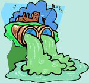

Unit 4: Solutions and Solubility
Activity 1: Water Everywhere
Assignment
 Assignment 1
Assignment 1
 Complete the following assignment and submit your work to the dropbox.
Complete the following assignment and submit your work to the dropbox.
Before you upload your file, ensure your name appears on the top of every page of your document.
Sources and Effects of Contaminants in Water
|  |
Contaminants in water originate from many different sources and significantly change nature's equilibrium. Rainwater is naturally acidic because the carbon dioxide in the air reacts with water vapour to produce carbonic acid, resulting in a pH of less than 7. God's creation allowed for nature to balance itself within reasonable means. Humans are a part of the environment. Throughout history, Earth has been able to adjust to any imbalances because of human activities. The industrial revolution accelerated human activities to a point where there are stresses and nature has done what it can to deal with these stresses. Now, humans have to do their part to help maintain the sustainability of the aquatic environment. A starting point in sustaining the aquatic environment is knowledge of the origins of the contaminants and their short and long term effects on the environment. |
For this assignment, you will produce a poster focusing on a specific pollutant in our water systems. You will research its origins and its cumulative effects on water quality and the environment.
Creating your poster:
- Research your pollutant using a variety of sources including the Internet, books, magazines, journals or pamphlets.
- Organize and classify the information using charts or graphic organizers.
- Write an introduction to the topic that includes the purpose of the research.
- Make sure that there is a sequence and order to the introduction, information and explanation presented in the poster.
- Include a summary and concluding statement explaining how the pollutant affects water quality.
- Credit your sources for the assignment in a properly written bibliography.
Your poster should include:
- A clear identification of the pollutant.
- An introduction and conclusion.
- Origins of the pollutant and its cumulative effects on the environment.
- Explanation of how this pollutant affects water quality.
- A separate, properly written bibliography. Please check with the teacher regarding preferred format.
Rubric

|
View the rubric for this assignment. View the long description of the rubric for this assignment. |
|---|
Assignment 2
Complete the following assignment and submit your work to the dropbox.
Before you upload your file, ensure your name appears on the top of every page of your document.
Should we drink the water?
| Is it safer to drink bottled water or municipal water? Which is more environmentally friendly? |
You have just moved into a new community. The township has a battery manufacturing plant, golf course, some farms, local retailers and some small subdivisions with private homes. Some older homes are still using septic tanks for their wastewater. Recent township meetings have highlighted some issues related to water supply. People were inquiring about the safety of the local municipal water supply and debating the use of water from a private bottled water distributor in a nearby township. Most people in the area are employees of the battery factory, water purification plant or the bottled water company. Improvements to the water purification plant will increase the local taxes. Improvements to the plant are not immediately necessary, but in the long term there are concerns.
As a resourceful and analytic person, you have decided to investigate the implications of using drinking water from the local municipal water supply or bottled water from a nearby private bottled water supplier. You plan to produce and present your findings in the form of an analytic report with recommendations.
In your report you will address the following questions:
- What are the economic costs of building, maintaining and monitoring water purification plants?
- What are the social and environmental costs of improper maintenance and monitoring of the plants?
- What are the public health concerns associated with the consumption of water in plastic containers?
Rubric
|
|
View the rubric for this assignment. View the long description of the rubric for this assignment. |
|---|
 Resources
Resources
- Environment Canada: Water Use
- Environment Canada: Water Pollution
- Toronto Water Treatment and Supply Facilities
- Ministry of the Environment: Drinking Water Ontario
This is a disclaimer. External Resources will open in a new window. Not responsible for external content.
Unless otherwise indicated, all images in this Activity are from the public domain or are © clipart.com or Microsoft clipart and are used with permission.